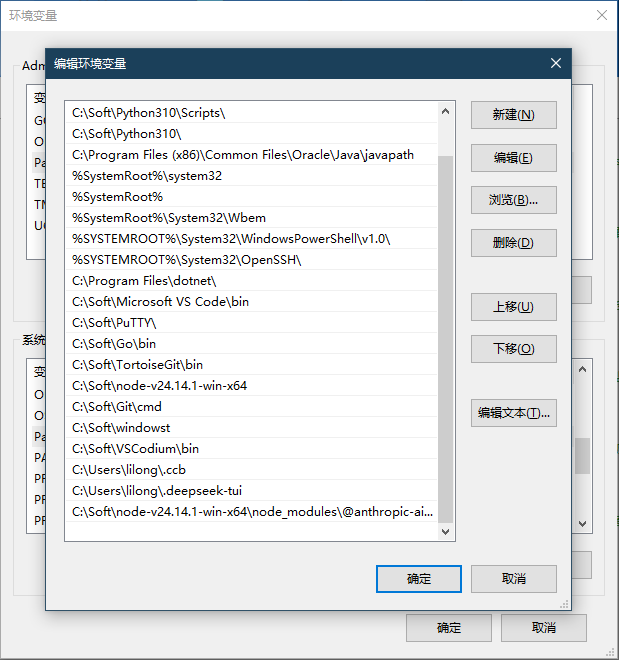
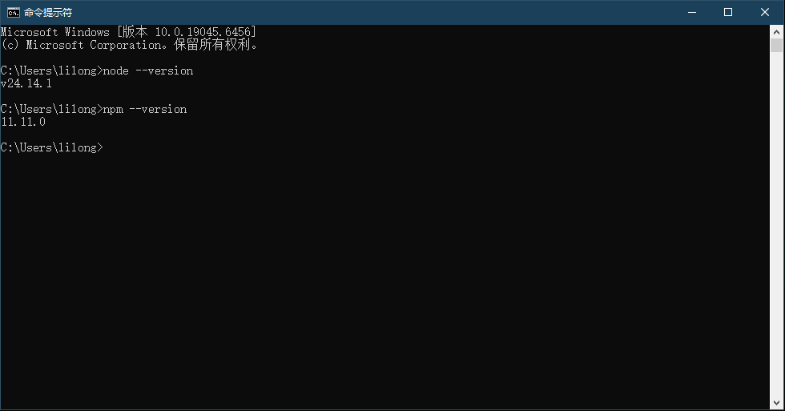
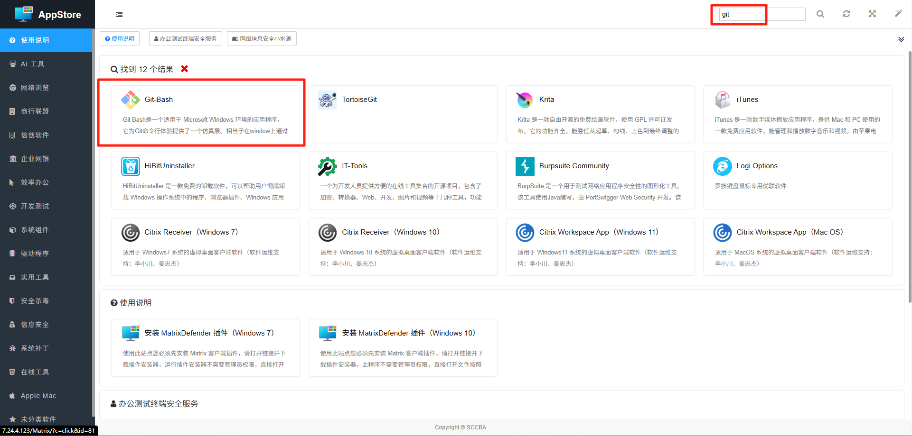
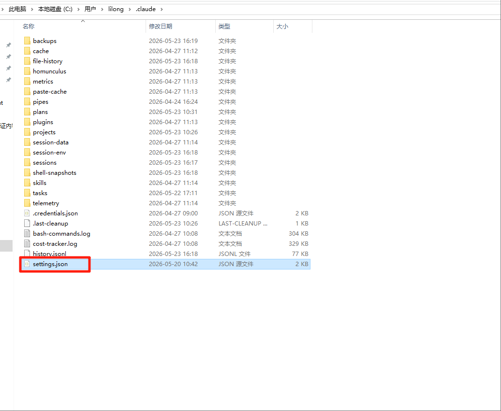
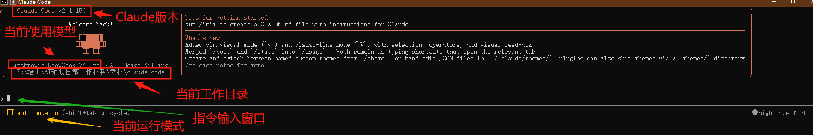

Claude Code
面向开发者的AI编程协作工具，让编码效率翻倍
什么是 Claude Code？
Claude Code 是 Anthropic 推出的AI编程助手，在终端命令行中运行。它能够理解你的整个代码仓库，帮你编写代码、修复Bug、进行代码审查、重构优化、编写测试等。
核心定位
面向开发者的AI协作工具 — 不是替代开发者，而是作为超级搭档，理解代码上下文后进行深度协作。运行在终端中，与你的开发环境无缝集成。
核心能力
Claude Code 覆盖软件开发的完整流程，以下是最常用的开发场景。
功能模块开发
描述需求即可生成完整的代码实现，包括接口定义、业务逻辑和错误处理。
样板代码生成
快速生成CRUD、API路由、数据库模型等重复性样板代码，节省大量时间。
单元测试编写
输入函数或模块，自动生成全面的单元测试用例，包含边界情况覆盖。
API对接
提供API文档链接或描述，自动生成调用代码、错误处理和类型定义。
Bug定位
描述Bug现象或粘贴错误日志，Claude Code 分析代码定位问题根因。
错误修复
不仅定位问题，还直接给出修复方案并修改代码，附带解释原因。
日志分析
将异常日志粘贴给AI，快速得到解读和排查建议，减少排查时间。
运行时问题诊断
描述奇怪的行为或性能问题，AI帮你分析可能的配置、环境或代码原因。
代码审查
在提交前让AI review你的改动，发现潜在问题、安全风险和代码风格问题。
代码规范检查
对照团队编码规范检查代码，确保提交质量符合团队标准。
最佳实践建议
AI会根据语言和框架的社区最佳实践，提出优化建议和改进方向。
安全检查
扫描代码中的常见安全漏洞（SQL注入、XSS等），给出修复方案。
代码重构
对遗留代码进行结构优化，提取公共逻辑，改善可读性和可维护性。
性能优化
分析代码中的性能瓶颈，提供优化建议（如缓存策略、查询优化、算法改进）。
架构升级
帮助进行技术栈迁移、框架版本升级、从单体到微服务的拆分规划。
技术文档生成
自动为现有代码生成API文档、README或架构说明文档。
Claude Code 架构概览
了解 Claude Code 的核心架构组件，有助于更好地利用其能力完成开发任务。
Claude Code 在执行任务时遵循三阶段循环：Plan（分析需求、检索代码、制定方案）→ Execute（创建/修改文件、运行命令、调用工具）→ Verify（检查输出、运行测试、确认结果）。每一轮迭代的输出作为下一轮的输入，直到任务完成。这种结构化循环确保了代码变更的可控性和可追溯性。
Claude Code 提供多种工作模式以适配不同任务场景：Plan 模式（先规划后执行，适合复杂变更）、Auto 模式（自动执行，适合明确任务）、讲解模式（边做边解释，适合学习场景）。模式切换改变 Agent 的自主程度和输出风格，但不改变底层工具能力。
Claude Code 通过标准化工具接口与开发环境交互，核心工具包括：Read/Write/Edit（文件操作）、Bash（执行命令）、Grep/Glob（代码搜索）、Git 操作（版本控制）。每类工具有明确的使用策略和安全边界，多工具组合使用形成完整的开发工作流。
Claude Code 支持创建子代理（Subagent）来并行处理独立任务。每个子代理拥有独立的上下文窗口和工具集，主会话负责任务分配和结果整合。常见用法：代码搜索（Explore agent）、代码审查（code-reviewer）、计划制定（Plan agent），多个子代理可以同时运行，互不阻塞。
Skills 是 Claude Code 的可复用领域知识包，也是扩展其专业能力的主要方式。
什么是 Skill？每个 Skill 是一个独立的知识模块，遵循 agentskills.io 开放标准。一个 Skill 内部包含：
- 领域指令（Instructions）：告诉 Agent 在该领域中的操作规范、注意事项和最佳实践
- 工具脚本：该领域专属的自动化脚本（如 PPT 生成、PDF 解析、OCR 提取）
- 参考文档：领域知识（API 参考、设计规范、写作指南等）
- 模板：输出模板（幻灯片模板、文档模板等）
Skill 的触发机制：Claude Code 在收到用户请求后，自动扫描 Skills 库，根据任务语义匹配最相关的 Skill，将其指令加载到上下文窗口。Skill 的激活是动态且无感的——你不需要手动指定使用哪个 Skill，Agent 会根据任务自动判断。
常见 Skill 示例：前端设计（frontend-design）指导 UI 实现规范、代码审查（code-review）指导审查流程和检查要点、PDF 处理（pdf）指导文档生成样式和排版规则、Bug 调试（systematic-debugging）指导根因分析的思维框架。
MCP（Model Context Protocol）是 Anthropic 发布的开放协议，为 AI 应用提供标准化的工具接入方式。
Claude Code 原生支持 MCP，通过配置 MCP Server 即可接入外部系统。每个 MCP Server 提供三类资源：Tools（可执行操作，如查数据库、发 Slack 消息）、Resources（可读取的数据源，如文件、API 响应）、Prompts（预定义的提示模板）。
MCP Server 是独立进程，通过 JSON-RPC 与 Claude Code 通信——Agent 决定"调用哪个工具、传什么参数"，Server 实际执行并返回结果。这种架构保证了工具执行的安全隔离。
| 维度 | Skills（技能） | MCP（协议工具） |
|---|---|---|
| 核心定位 | 领域知识 + 操作流程 | 外部工具 + 数据接口 |
| 解决的问题 | "怎么做"——告诉 Agent 完成某类任务的方法论和最佳实践 | "用什么"——为 Agent 提供调用外部系统的标准化接口 |
| 内容形式 | 指令文档、脚本、模板、参考资料 | API 定义、Tool 描述、Resource 和 Prompt 模板 |
| 运行位置 | 加载到 Agent 的上下文窗口，融入推理过程 | 独立进程，Agent 通过 JSON-RPC 协议调用，工具在外部执行 |
| 典型例子 | "如何做一份专业的前端页面"的完整设计方法和规范 | "打开浏览器截图当前页面"的具体操作接口 |
| 能力扩展 | 可人工编写，也可由 Agent 从经验中总结 | 须人工开发 MCP Server，工具能力固定 |
简言之：Skill 教 Agent "怎么做"，MCP 给 Agent "用什么"。一个完整的 Agent 工作流中，MCP 提供了可执行的工具，Skill 提供了使用这些工具的正确方法和领域上下文。两者在 Claude Code 中共存并互补。
Claude Code 采用多层上下文管理策略应对长对话场景：CLAUDE.md（项目级持久记忆，每次会话自动加载）、自动摘要压缩（对话过长时自动提炼关键信息）、Memory 系统（跨会话持久化用户偏好和项目知识）。这些机制确保上下文窗口内始终保留最关键的信息。
前置条件：安装 Node.js 与 Git
Claude Code 依赖 Node.js 运行环境和 Git 版本控制工具，安装前请先完成以下步骤。
Node.js
Claude Code 的运行基础，提供 npm 包管理器用于安装。
Git
Claude Code 依赖 Git 进行代码版本管理和仓库操作。
一、安装 Node.js
-
下载 Node.js 安装包
下载本培训提供的 Node.js Windows 压缩包 node-v24.16.0-win-x64.zip，右键解压到本地。
-
将解压后的文件夹放到 C:\Soft 目录
将解压得到的
node-v24.16.0-win-x64文件夹，移动到C:\Soft\目录下（如没有 Soft 目录请先创建）。 -
打开系统环境变量设置
打开终端管理工具，选择「控制面板」→「系统环境变量」，进入系统属性对话框。

-
将 Node.js 路径追加到 Path 变量
在「系统变量」区域找到并双击 Path，点击「新建」，填入以下路径：
C:\Soft\node-v24.16.0-win-x64点击「确定」保存，关闭所有对话框。
-
验证安装结果
打开 CMD 窗口，依次输入以下命令验证 Node.js 是否安装成功：
node --version npm --version如果能正确输出版本号，说明安装成功。

-
下载 Node.js 安装包
下载本培训提供的 Node.js Linux 压缩包。请根据你的系统架构选择对应版本：
不确定你的架构？在终端执行
uname -m，输出x86_64选 x86-64 版，输出aarch64选 ARM64 版。 -
解压安装包
在终端中执行以下命令解压：
tar -xJf node-v24.16.0-linux-x64.tar.xz -
将 Node.js 移动到系统目录
将解压后的文件夹移动到
/usr/local/目录下：sudo mv node-v24.16.0-linux-x64 /usr/local/node -
配置环境变量
将 Node.js 路径添加到系统 PATH 中：
echo 'export PATH=/usr/local/node/bin:$PATH' >> ~/.bashrc source ~/.bashrc -
验证安装结果
在终端中输入以下命令验证 Node.js 是否安装成功：
node --version npm --version如果能正确输出版本号，说明安装成功。
node-v24.16.0-linux-arm64.tar.xz），在执行上述解压和移动命令时，请将文件名中的 x64 替换为 arm64，例如 tar -xJf node-v24.16.0-linux-arm64.tar.xz 和 sudo mv node-v24.16.0-linux-arm64 /usr/local/node。
二、安装 Git
-
通过应用商店安装 Git
登录公司应用商店
http://7.24.4.123/Matrix/，搜索 Git-Bash，点击安装即可。
一键安装 Claude Code
Node.js 和 Git 已安装？复制以下一条命令到终端，自动完成 npm 源配置 + Claude Code 安装 + 配置目录创建。
安装 Claude Code（分步详解）
如需了解每一步的作用，可参考以下分步安装说明。追求速度可直接使用上方一键脚本。
-
执行安装命令
打开终端（CMD 或 PowerShell），执行以下命令全局安装 Claude Code：
npm install -g @anthropic-ai/claude-code@2.1.153 --registry=http://7.24.4.68:28081/repository/npm/ -
验证安装结果
安装完成后，运行以下命令查看 Claude Code 版本，确认安装成功：
claude --version
配置内网大模型连接
首次运行 Claude Code 之前，需要修改 settings.json 文件，将模型指向公司内网大模型服务。API Key 和接口 URL 请参考 API Key 申请指南 获取。
为什么需要配置 settings.json？
Claude Code 默认连接 Anthropic 官方服务，公司内网环境下需要将模型接口指向内部 AI Gateway（http://7.24.28.9:8080），并使用在平台上申请的 API Key 进行认证。
-
找到 settings.json 文件位置
Claude Code 的配置文件位于用户目录下的
.claude文件夹中：C:\Users\你的用户名\.claude\settings.json如果
.claude目录尚不存在，请先运行一次claude命令，首次启动会自动生成该目录。
-
下载并替换 settings.json
下载以下配置文件模板，将其覆盖到上述
.claude目录中：该文件已预配置好内网模型地址和接口参数，只需替换 API Key 即可。
-
修改配置中的关键字段
用文本编辑器（如记事本、VS Code）打开 settings.json，将以下字段替换为你自己的信息：
字段 说明 修改方式 ANTHROPIC_AUTH_TOKENAPI Key，用于身份认证 替换为你在 AI Gateway 平台申请的 Key，参考 API Key 申请 ANTHROPIC_BASE_URL大模型接口地址 已预设为 http://7.24.28.9:8080，无需修改ANTHROPIC_MODEL默认调用的模型名称 已预设为 anthropic-glm5，可在模型目录中查看其他可用模型ANTHROPIC_DEFAULT_OPUS_MODELOpus 级别模型（复杂任务），Claude Code 执行高难度编码任务时调用 建议与 ANTHROPIC_MODEL保持一致ANTHROPIC_DEFAULT_SONNET_MODELSonnet 级别模型（日常任务），Claude Code 常规编码和对话时调用 建议与 ANTHROPIC_MODEL保持一致ANTHROPIC_DEFAULT_HAIKU_MODELHaiku 级别模型（轻量快速），Claude Code 快速判断和简单操作时调用 建议与 ANTHROPIC_MODEL保持一致CLAUDE_CODE_SUBAGENT_MODEL子代理模型，Claude Code 派出子任务（如代码审查、并行搜索）时调用 建议与 ANTHROPIC_MODEL保持一致model顶层默认模型设置 建议与 ANTHROPIC_MODEL保持一致简化配置 内网环境下所有模型字段建议统一填写同一个模型名称（如anthropic-glm5），避免不同级别任务调用不同模型时因模型不存在而报错。如果后续平台上线了多种模型，可以分别指定。安全提醒 文件中的 Key 仅作示例，请务必替换为你自己的 Key，且不要将含有真实 Key 的 settings.json 上传到代码仓库或共享给他人。 -
配置完成，启动 Claude Code
保存 settings.json 后，在终端中运行
claude命令即可启动。首次启动会自动加载配置，连接内网大模型。
快速配置方案：一键导入 Claude Code 完整环境
如果你不想手动安装 Node.js、配置 settings.json、逐个安装插件，可以直接下载我们预先打包好的完整 .claude 目录，覆盖到你的电脑上即可使用。该包包含了 Claude Code 的全部插件和配置模板。
这个压缩包里有什么？
包含完整的 .claude 目录——settings.json 配置模板、80+ 预装插件（代码审查、前端设计、PDF/Office 文档处理、浏览器控制、MCP 工具集成等）、Skills 技能库、Memory 记忆系统。覆盖后只需修改路径和 API Key 即可投入使用，省去数小时的安装和配置时间。
-
下载 claude-win.zip
点击下方按钮下载完整环境包（约 1.2 GB，包含所有插件和配置）：
-
解压并覆盖到用户目录
将下载的
claude-win.zip解压，把其中的.claude文件夹复制到你的 Windows 用户目录下：C:\Users\你的用户名\.claude\如果该目录已存在，选择「覆盖/合并」。覆盖后你的
.claude目录将包含完整的插件和配置模板。注意：覆盖后会替换你原有的.claude目录中的同名文件。如果你已有自己的 settings.json，建议先备份。 -
启动 Claude Code，让 AI 帮你修复配置
解压完成后，打开终端输入
claude启动 Claude Code，然后将以下提示词粘贴到对话中：我的 .claude 目录是从另一台电脑拷贝过来的，请帮我改成我自己电脑的配置。需要修改以下内容： 1. 扫描 settings.json 和所有插件配置文件中包含的旧路径（如 C:\Users\11490），全部替换为当前电脑的实际路径（C:\Users\我的用户名） 2. 检查 settings.json 中的 ANTHROPIC_AUTH_TOKEN，如果有旧的 API Key 请提醒我替换成自己的 Key 3. 检查所有插件的 enabledPlugins 是否正常，如有插件报错请帮我修复 4. 确认所有 MCP server 的启动路径是否正确Claude Code 会自动扫描
.claude目录下的所有文件，将旧路径替换为当前电脑的用户路径，并检查配置完整性。关键步骤：这一步非常重要！压缩包是从他人电脑打包的，里面的配置文件和插件引用路径都指向原电脑的用户目录。必须让 Claude 帮你批量替换路径，否则插件会因找不到文件而无法正常工作。 -
配置 API Key
路径修复完成后，按照 API Key 申请指南 获取自己的 Key，然后修改
settings.json中的ANTHROPIC_AUTH_TOKEN字段。其他模型配置项（如 ANTHROPIC_MODEL、ANTHROPIC_BASE_URL 等）已预设好内网地址，通常无需修改。
使用 Claude Code
配置完成后，即可在项目中开始使用 Claude Code 进行开发协作。
-
在项目中启动
打开终端，进入你的项目根目录，运行以下命令进入交互模式：
cd 你的项目目录 claudeClaude Code 会自动扫描项目结构、读取 CLAUDE.md 等配置文件，理解代码上下文后即可开始对话。

快捷用法 也可以直接传入任务描述单次执行：claude "帮我修复这个Bug" -
描述需求，开始协作
在对话界面中描述你的开发需求，Claude Code 会在代码库中直接操作：编写代码、修改文件、运行测试等。每次操作前会提示你确认，你可以随时干预或调整方向。
开发模式详解
Claude Code 内置了多种工作模式，适应不同开发阶段和信任程度。理解每种模式的特点，才能在不同场景下选择最合适的方式。
核心思维：先设计、再动手
Plan Mode 让 Claude 在写任何代码之前，先设计完整的实施方案并请你审批。这避免了"写到一半发现方向错了"的浪费，是处理复杂需求的首选方式。
何时使用
新功能开发、架构重构、多文件改动、需要权衡多种方案的任务。当你对需求方向不确定时，先用 Plan Mode 对齐思路。
工作方式
Claude 先深入探索代码库，设计实现方案（包括涉及的文件、改动范围、技术选型），生成计划文档供你审阅，审批通过后才开始写代码。
/plan 命令，或描述需求时说"先用 Plan Mode 设计方案"。Claude 也会在判断任务复杂时自动建议进入计划模式。
核心思维：信任执行、释放双手
Auto Mode 让 Claude 自主完成整个任务链，跳过每一步的确认提示。适合你已明确需求、信任 Claude 能独立完成的任务，可以放下键盘去喝杯咖啡。
何时使用
你已经清楚描述需求且验证过类似任务、样板代码生成、批量文件操作、运行测试套件并修复失败用例等确定性高的任务。
注意事项
Auto Mode 下 Claude 会连续执行多个操作（读写文件、运行命令），建议在明确任务边界、确认代码已提交后再使用，方便随时回滚。
/auto 切换自动模式，或启动时加参数 claude --dangerously-skip-permissions（慎用）。再次输入 /auto 可退出。
核心思维：边做边讲、知其所以然
讲解模式下 Claude 在写代码的同时会解释为什么这样写、有哪些替代方案、涉及的设计模式。适合学习新框架或接手不熟悉的代码模块。
何时使用
接手陌生代码库、学习新技术栈、Code Review 时希望理解改动原因、团队新人上手项目。
额外收获
每次操作附带 "Insight" 知识点卡片，讲解架构决策、设计模式、性能考量等，让你在完成工作的同时积累技术判断力。
explanatory，或在对话中说"讲解模式下帮我做XXX"。
核心思维：引导参与、在实践中学习
学习模式故意不替你写所有代码——Claude 会搭建好上下文和框架，把关键决策和核心逻辑留给你来写，通过实际动手加深理解。
何时使用
想通过实战学习编程模式、希望保持对关键代码的控制权、需要理解每个设计决策的场景。
学习价值
Claude 会解释每个留给你写的函数的意义、提供多种实现思路的对比、在你完成后给出 Code Review 反馈，形成完整的学习闭环。
learning，或在对话中明确要求"用学习模式带我完成这个功能"。
子代理系统（Subagent）
子代理是 Claude Code 最强大的机制之一——面对复杂任务，它可以派出多个"小助手"并行工作，每个子代理有独立的上下文窗口，互不干扰。
一句话理解
你（主 Claude）是项目主管，子代理就是你派出去的专项工程师。你交代任务、他们独立完成、回来向你汇报——你汇总结果后继续推进。这就是 Agent 协作模式。
Explore 探索代理
只读搜索型，快速在代码库中定位文件、搜索符号、追踪引用关系。不修改任何文件。
典型用途：查找某功能在哪些文件中实现、搜索所有调用某API的地方
Plan 架构代理
设计型，分析现有架构后出实施方案。只做设计和规划，不写实现代码。
典型用途：新功能的技术方案设计、重构策略、依赖分析
General 通用代理
全能型，可以读写文件、执行命令、运行测试。是执行具体开发任务的主力。
典型用途：独立的Bug修复、小功能实现、代码清理
核心优势：上下文隔离
每个子代理有独立上下文窗口（不会被主对话的历史撑爆），因此可以并行处理大量信息。比如同时搜索 3 个不同模块的实现，每个搜索都在独立子代理中运行。
核心优势：并行执行
多个子代理可以同时启动、各自独立工作。搜索代码库时启动 2-3 个 Explore 代理并行搜索不同关键词，效率翻倍。
常用斜杠命令 & 功能
Claude Code 提供丰富的交互命令，在对话中直接输入即可使用。以下是日常开发中最常用的命令和功能。
| 命令 | 作用 | 使用场景 |
|---|---|---|
/plan |
进入计划模式，先设计实施方案再动手 | 复杂需求、新功能、重构前 |
/auto |
切换自动模式，跳过确认提示自主执行 | 明确任务、信任执行的场景 |
/review |
对当前改动进行代码审查 | 提交前检查、PR Review |
/security-review |
安全专项审查，扫描漏洞和风险 | 涉及认证、权限、敏感数据的代码 |
/init |
初始化项目，生成 CLAUDE.md 项目指南 | 新项目接入 Claude Code 时 |
/clear |
清空当前对话上下文 | 切换话题、上下文过长时 |
/compact |
压缩对话上下文，保留关键信息 | 长对话后释放上下文空间 |
/help |
查看帮助和可用命令列表 | 忘记命令时随时查阅 |
/config |
修改 Claude Code 配置（主题、模型等） | 个性化设置、切换模型 |
/add-dir |
将外部目录加入工作区 | 需要跨多个项目工作时 |
/cost |
查看当前会话的 Token 用量 | 关注 API 调用成本时 |
/context |
查看当前上下文使用情况 | 判断是否需要 compact |
CLAUDE.md — 项目指南文件
放在项目根目录的 CLAUDE.md 是 Claude 了解你项目的首要入口。写明技术栈、目录结构、编码规范、注意事项，Claude 每次启动都会读取。一个维护良好的 CLAUDE.md 能让 Claude 的代码质量提升一个档次。
Memory 记忆系统
Claude 可以在项目级 .claude/memory/ 目录下持久化记录项目信息和工作偏好。比如"这个项目用 snake_case 命名"、"上次重构时决定用 Redis 做缓存"。越用越懂你的项目。
Hooks 钩子系统
通过 settings.json 配置 Hooks，在特定事件（如会话开始、工具调用前后）自动触发脚本。比如每次修改文件后自动运行 lint、提交前跑测试等，构建自动化工作流。
TodoWrite 任务追踪
Claude 在执行复杂任务时会自动创建 Todo 列表并实时更新进度。你可以在任何时候查看任务进展，了解当前做到哪一步、还剩什么。
Verification 验证机制
Claude Code 有内置的"验证后再报告完成"机制——写完代码后自动运行测试、检查类型、确认编译通过，确保改动能正常工作后才标记任务完成。
Code Review 代码审查
使用 /review 命令，Claude 会对你的改动进行全面审查：检查逻辑正确性、安全漏洞、代码风格、边界情况。支持配置审查深度（低/中/高），作为提交前的最后一道防线。
Security Review 安全审查
/security-review 命令专注于安全维度：SQL注入、XSS、CSRF、敏感信息泄露、权限校验等。涉及用户数据、认证授权的代码建议运行此检查。
TDD 测试驱动开发
Claude 支持 TDD 工作流——先写测试、确认失败、再写实现、验证通过。对于核心业务逻辑，TDD 模式能显著降低 Bug 率。
Skills = Claude Code 的"专业培训"
Skills 是 Claude Code 的扩展机制——每个 Skill 相当于给 Claude 做了一次专项培训，教它如何处理特定领域的任务。Skill 由 Markdown 文件定义，放在 .claude/skills/ 目录下。
内置 Skills
Claude Code 自带大量 Skills：PDF 处理、Excel 操作、PPT 生成、前端设计、代码审查等。在对话中直接说需求（如"把这个数据生成PDF报告"），Claude 会自动调用对应 Skill。
自定义 Skills
团队可以编写专属 Skills：比如"按公司代码规范审查"、"生成标准API文档"、"对接内部平台"。一次编写、全团队复用，让 Claude 更贴合团队工作流。
如何调用 Skill
两种方式：① 直接描述需求，Claude 自动匹配相关 Skill；② 在对话中输入 /skill-name 明确调用。Claude 在调用 Skill 后会严格遵循其规定的流程。
延伸学习
想深入了解 Skills 开发，参考延伸阅读区的 《打造 Claude Code 技能完全指南》，从入门到定制全覆盖。
实际开发工作流示例
综合运用上述模式和功能，以下是一个完整的开发协作流程示例。
-
启动与上下文准备
在项目根目录运行
claude，Claude 自动读取 CLAUDE.md、扫描项目结构、加载记忆。如有需要先用/init生成项目指南。 -
Plan Mode 方案设计
描述需求后用
/plan进入计划模式。Claude 探索代码库、设计实施方案、列出改动文件清单，你审阅确认后进入实现阶段。 -
Auto Mode 批量实现
方案确认后切换到
/auto模式，Claude 自主完成代码编写、文件编辑、测试运行。你只需在完成后检查 diff。 -
Review + 修复迭代
实现完成后用
/review进行代码审查，发现问题直接在对话中要求修复，直到审查通过。 -
安全审查与提交
涉及敏感操作的代码再跑一次
/security-review，确认无误后提交 PR。整个过程中 Claude 的子代理会自动并行处理搜索和检查任务。
常见问题 & 使用建议
Claude Code 运行在终端中，能理解整个代码仓库的结构，可以直接执行命令、读写文件、运行测试、管理 Git。它比 IDE 插件的上下文范围更广，能做更复杂的跨文件操作，还能派出子代理并行工作。
维护好项目中的 CLAUDE.md 文件是关键——描述项目结构、技术栈、编码规范和注意事项，这是 Claude 了解项目的最佳入口。另外，在 Memory 中记录重要的设计决策和约定，Claude 会越来越懂你的项目。
Plan Mode：需求不太明确、改动涉及多文件、需要权衡技术方案时先用 Plan Mode 对齐思路。Auto Mode：需求已明确、任务边界清晰、属于重复性操作时用 Auto Mode 释放双手。一个实用经验是：新功能先用 Plan，Bug修复可直接 Auto。
必须检查。AI 生成的代码可能包含逻辑错误、安全漏洞或不符合项目规范的地方。建议每次 AI 修改后：运行测试、检查 diff、确保理解每个变更。可以用 /review 让 Claude 自我审查作为第一道关，但最终决策权在你。
四道防线：① 不在 AI 中输入生产密钥、密码等敏感信息；② 使用 /security-review 对敏感代码做专项安全检查；③ AI 生成的代码走正常的 Code Review 流程；④ 所有变更在测试环境验证后再上线。
当你向 Claude 提出需要大范围搜索、并行处理多个独立子任务、或需要独立上下文的分析工作时，它会自动判断并派出子代理。比如"帮我在全项目中找到所有用了旧API的地方并给出替换建议"——Claude 可能同时派出 2-3 个 Explore 子代理并行搜索不同模块，再汇总结果。
运维实战场景
Claude Code 不仅适用于应用开发，在运维脚本、数据处理、配置管理等场景同样得心应手。
运维脚本开发
用自然语言描述需求，Claude Code 能快速生成 Python/Shell 运维脚本——批量操作、监控脚本、数据采集、自动化巡检等。还可让它审查和优化现有脚本。
日志分析脚本
将日志样本粘贴给 Claude Code，让它自动编写解析脚本来提取关键信息、统计错误频率、生成可视化报表。手写正则容易出错，AI 能帮你精准匹配日志格式。
数据库操作辅助
编写 SQL 查询、优化慢查询、生成数据库迁移脚本。Claude Code 擅长 SQL，可直接在代码库上下文中理解表结构，帮你写出准确高效的数据库操作。
配置文件管理
批量修改服务器配置文件、编写 Ansible Playbook、生成 Nginx/Apache 配置模板。Claude Code 能理解复杂的配置语法，减少手动配置的遗漏和错误。
延伸阅读
以下教程助你从入门到精通 Claude Code，点击任意卡片在线阅读。